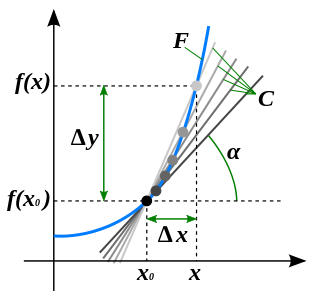
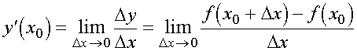

Понятие
Производная (функции в точке) — основное понятие дифференциального исчисления, которое характеризует скорость изменения функции (в конкретной точке).
Производную определяют как предел отношения приращения функции к приращению ее аргумента при стремлении приращения аргумента к 0, если такой предел есть. Функция, которая имеет конечную производную (в некоторой точке), называется дифференцируемой (в данной точке).
Процесс нахождения производной является дифференцированием. Обратный процесс — вычисление первообразной — интегрирование.
Изображение понятия производной:

Рассмотрим взятую наугад внутреннюю точку x 0 области определения функции y = f(x).
Разность Δx=x-x0 где x - тоже внутренняя точка области определения, является приращением аргумента в точке x0.
Разность f(x0+Δx) - f(x0) является приращением функции в точке x0, соответствующим приращению Δx и обозначают как Δy = Δf(x).
Производной функции y = f(x) в точке x0 является предел отношения приращения функции к приращению аргумента в этой точке при стремлении приращения аргумента к 0, если такой предел есть и конечен, то есть:
